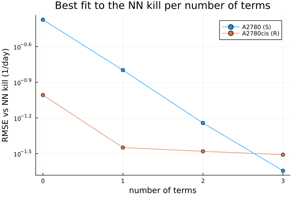

killS = 0.411·v + 0.221·v³ + -0.503·v²·ρ
killR = 0.104·v²
v = filtered exposure (uM), dv/dt = γ(u − v); ρ = relative density; H(v; c, n) = vⁿ/(cⁿ + vⁿ). Every combination of the best 1–3-term A2780 form and 0–3-term A2780cis form was refit as an ODE on the data and ranked by BIC. The winner's coefficients carry Bayesian-bootstrap 5–95% intervals; terms whose interval includes 0 are flagged, not removed.
| line | term | estimate | lo | hi | includes_zero |
|---|---|---|---|---|---|
| S | v | 0.4112 | 0.3955 | 0.4836 | false |
| S | v³ | 0.2208 | 0.2048 | 0.2219 | false |
| S | v²·ρ | -0.5032 | -0.5935 | -0.4469 | false |
| R | v² | 0.1042 | 0.08692 | 0.11 | false |
| kill_S | kill_R | kill_params | bic_drug |
|---|---|---|---|
| 0.457·v + 0.218·v³ + -0.531·v²·ρ | 0.0945·v² | 4 | 299.3 |
| 0.457·v + 0.218·v³ + -0.531·v²·ρ | 0.0554·v³ + 0.0608·v·ρ | 5 | 303.4 |
| 0.457·v + 0.218·v³ + -0.531·v²·ρ | 0.0652·v³ + 0.149·v·ρ + -0.0967·v²·ρ | 6 | 305.5 |
| 0.75·v + -0.6·v·ρ | 0.0945·v² | 3 | 316.5 |
| 0.75·v + -0.6·v·ρ | 0.0652·v³ + 0.149·v·ρ + -0.0967·v²·ρ | 5 | 319.4 |
| 0.75·v + -0.6·v·ρ | 0.0554·v³ + 0.0608·v·ρ | 4 | 321.1 |
| 0.457·v + 0.218·v³ + -0.531·v²·ρ | 0 | 3 | 345.9 |
| 0.75·v + -0.6·v·ρ | 0 | 2 | 362.4 |
| 1.5·H(v; 1.5, 2) | 0.0652·v³ + 0.149·v·ρ + -0.0967·v²·ρ | 4 | 472.6 |
| 1.5·H(v; 1.5, 2) | 0.0945·v² | 2 | 477.4 |
| 1.5·H(v; 1.5, 2) | 0.0554·v³ + 0.0608·v·ρ | 3 | 484.2 |
| 1.5·H(v; 1.5, 2) | 0 | 1 | 518.4 |
| model | train: drug units | train: untreated co-culture | VALIDATION: ce1 treated co-culture |
|---|---|---|---|
| closed form (optimal) | 0.2084 | 0.5976 | 0.3524 |
| UDE (NN kill) | 0.2044 | 0.5625 | 0.3312 |
| Hill (mechanistic) | 0.2238 | 0.7336 | 0.3528 |
| model | kill_params | bic_drug |
|---|---|---|
| closed form (optimal) | 4 | 299.3 |
| Hill (mechanistic) | 5 | 330.3 |
| UDE (NN kill) | 113 | 930.4 |
| pure neural ODE | 129 | 1008 |
| no drug | 0 | 3773 |

Sampled region: v ∈ [0, 1.45] uM, ρ ∈ [0.01, 0.95]. Ensemble spread (mean sd of NN kill): 0.0727 /day.
| nterms | formula | rmse | r2 |
|---|---|---|---|
| 0 | 0 | 0.4228 | -1.465 |
| 1 | 1.5·H(v; 1.5, 2) | 0.1592 | 0.6504 |
| 2 | 0.75·v + -0.6·v·ρ | 0.05716 | 0.9549 |
| 3 | 0.457·v + 0.218·v³ + -0.531·v²·ρ | 0.0227 | 0.9929 |
STLSQ (SINDy) sweep, for comparison:
| lambda | nterms | formula | rmse |
|---|---|---|---|
| 0.001 | 14 | 0.816·v + 7.69·v² + -1.46·v³ + -0.369·v·ρ + 0.0172·v²·ρ + -0.19·v³·ρ + 3.08·H(v; 0.8, 2) + -0.118·H(v; 0.8, 4) + -67.6·H(v; 1.0, 2) + 0.35·H(v; 1.0, 4) + 187.0·H(v; 1.2, 2) + 0.62·H(v; 1.2, 4) + -169.0·H(v; 1.5, 2) + 4.45·H(v; 1.5, 4) | 0.01655 |
| 0.03162 | 13 | 0.812·v + 7.7·v² + -1.46·v³ + -0.361·v·ρ + -0.182·v³·ρ + 3.08·H(v; 0.8, 2) + -0.118·H(v; 0.8, 4) + -67.6·H(v; 1.0, 2) + 0.35·H(v; 1.0, 4) + 187.0·H(v; 1.2, 2) + 0.62·H(v; 1.2, 4) + -169.0·H(v; 1.5, 2) + 4.45·H(v; 1.5, 4) | 0.01656 |
| 0.1 | 12 | 0.81·v + 8.52·v² + -1.69·v³ + -0.361·v·ρ + -0.182·v³·ρ + -1.83·H(v; 0.8, 2) + -39.4·H(v; 1.0, 2) + 0.526·H(v; 1.0, 4) + 149.0·H(v; 1.2, 2) + 1.14·H(v; 1.2, 4) + -157.0·H(v; 1.5, 2) + 4.53·H(v; 1.5, 4) | 0.01656 |
| 0.2371 | 11 | 0.813·v + 6.23·v² + -1.36·v³ + -0.361·v·ρ + -0.182·v³·ρ + -2.18·H(v; 0.8, 2) + -17.2·H(v; 1.0, 2) + 71.6·H(v; 1.2, 2) + 0.833·H(v; 1.2, 4) + -80.9·H(v; 1.5, 2) + 1.03·H(v; 1.5, 4) | 0.01656 |
| 0.4217 | 7 | 0.655·v + 1.38·v² + -0.413·v³·ρ + -13.9·H(v; 1.0, 2) + 39.3·H(v; 1.2, 2) + -35.0·H(v; 1.5, 2) + 1.2·H(v; 1.5, 4) | 0.03957 |
| 0.5623 | 5 | 0.64·v + 0.469·v² + -4.72·H(v; 1.0, 2) + 10.8·H(v; 1.2, 2) + -8.95·H(v; 1.5, 2) | 0.1526 |
| 0.7499 | 4 | -1.24·v² + 38.3·H(v; 1.0, 2) + -98.5·H(v; 1.2, 2) + 74.3·H(v; 1.5, 2) | 0.1537 |
| 1 | 7 | 88.0·v² + -30.0·v³ + -109.0·H(v; 0.8, 2) + 694.0·H(v; 1.0, 2) + -1280.0·H(v; 1.2, 2) + 640.0·H(v; 1.5, 2) + -61.0·H(v; 1.5, 4) | 0.1528 |
Sampled region: v ∈ [0, 1.45] uM, ρ ∈ [0.02, 0.98]. Ensemble spread (mean sd of NN kill): 0.0376 /day.
| nterms | formula | rmse | r2 |
|---|---|---|---|
| 0 | 0 | 0.09835 | -1.024 |
| 1 | 0.0945·v² | 0.03553 | 0.7358 |
| 2 | 0.0554·v³ + 0.0608·v·ρ | 0.03303 | 0.7717 |
| 3 | 0.0652·v³ + 0.149·v·ρ + -0.0967·v²·ρ | 0.03097 | 0.7993 |
STLSQ (SINDy) sweep, for comparison:
| lambda | nterms | formula | rmse |
|---|---|---|---|
| 0.001 | 14 | 0.0143·v + 0.167·v² + 0.306·v³ + 0.0841·v·ρ + 0.132·v²·ρ + -0.139·v³·ρ + 6.9·H(v; 0.8, 2) + -0.133·H(v; 0.8, 4) + -49.0·H(v; 1.0, 2) + -0.0487·H(v; 1.0, 4) + 90.2·H(v; 1.2, 2) + -0.265·H(v; 1.2, 4) + -55.4·H(v; 1.5, 2) + 0.933·H(v; 1.5, 4) | 0.03022 |
| 0.07499 | 13 | 7.68·v² + -1.54·v³ + 0.0842·v·ρ + 0.132·v²·ρ + -0.138·v³·ρ + -19.3·H(v; 0.8, 2) + 0.487·H(v; 0.8, 4) + 81.7·H(v; 1.0, 2) + 1.31·H(v; 1.0, 4) + -43.4·H(v; 1.2, 2) + 2.88·H(v; 1.2, 4) + -65.0·H(v; 1.5, 2) + 4.01·H(v; 1.5, 4) | 0.03022 |
| 0.1334 | 12 | 3.95·v² + -0.906·v³ + 0.0844·v·ρ + 0.132·v²·ρ + -0.138·v³·ρ + -4.99·H(v; 0.8, 2) + 0.0986·H(v; 0.8, 4) + 22.3·H(v; 1.0, 2) + -19.5·H(v; 1.2, 2) + 1.05·H(v; 1.2, 4) + -10.5·H(v; 1.5, 2) + -1.46·H(v; 1.5, 4) | 0.03022 |
| 0.3162 | 11 | 3.99·v² + -0.831·v³ + 0.0844·v·ρ + 0.132·v²·ρ + -0.138·v³·ρ + -0.858·H(v; 0.8, 2) + -7.36·H(v; 1.0, 2) + 34.0·H(v; 1.2, 2) + 0.719·H(v; 1.2, 4) + -42.2·H(v; 1.5, 2) + -0.562·H(v; 1.5, 4) | 0.03022 |
| 0.4217 | 10 | 15.0·v² + -3.84·v³ + 0.303·v²·ρ + -0.219·v³·ρ + -7.53·H(v; 0.8, 2) + 3.76·H(v; 1.0, 2) + 61.6·H(v; 1.2, 2) + 2.25·H(v; 1.2, 4) + -111.0·H(v; 1.5, 2) + -2.41·H(v; 1.5, 4) | 0.0303 |
| 0.5623 | 9 | 6.86·v² + -2.18·v³ + 0.303·v²·ρ + -0.219·v³·ρ + -8.03·H(v; 0.8, 2) + 54.4·H(v; 1.0, 2) + -104.0·H(v; 1.2, 2) + 53.9·H(v; 1.5, 2) + -5.58·H(v; 1.5, 4) | 0.0303 |
| 1 | 7 | 7.01·v² + -2.29·v³ + -8.03·H(v; 0.8, 2) + 54.4·H(v; 1.0, 2) + -104.0·H(v; 1.2, 2) + 53.9·H(v; 1.5, 2) + -5.58·H(v; 1.5, 4) | 0.03445 |